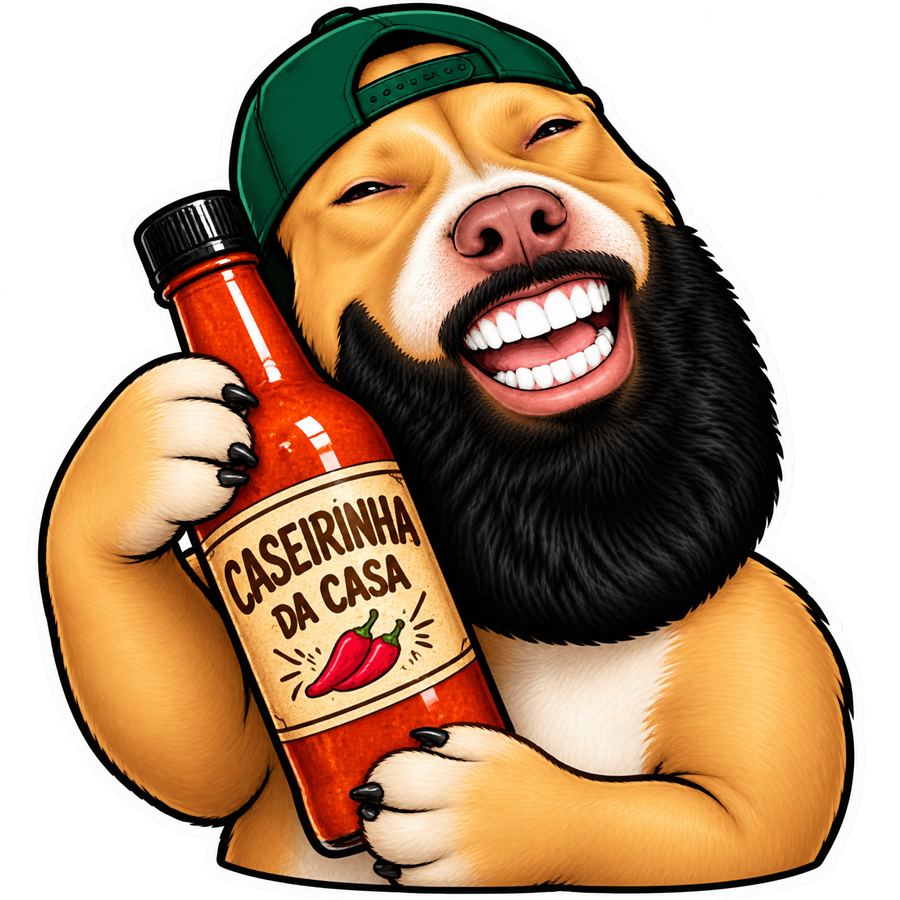

Feita em casa, do jeito que o Du gosta. Pouco ingrediente, muita personalidade e aquela ardida que deixa saudade.

Caseirinha da CasaFeita à mãoArde na medidaReceita do DuCaseirinha da CasaFeita à mãoArde na medidaReceita do DuCaseirinha da CasaFeita à mãoArde na medidaReceita do DuCaseirinha da CasaFeita à mãoArde na medidaReceita do Du